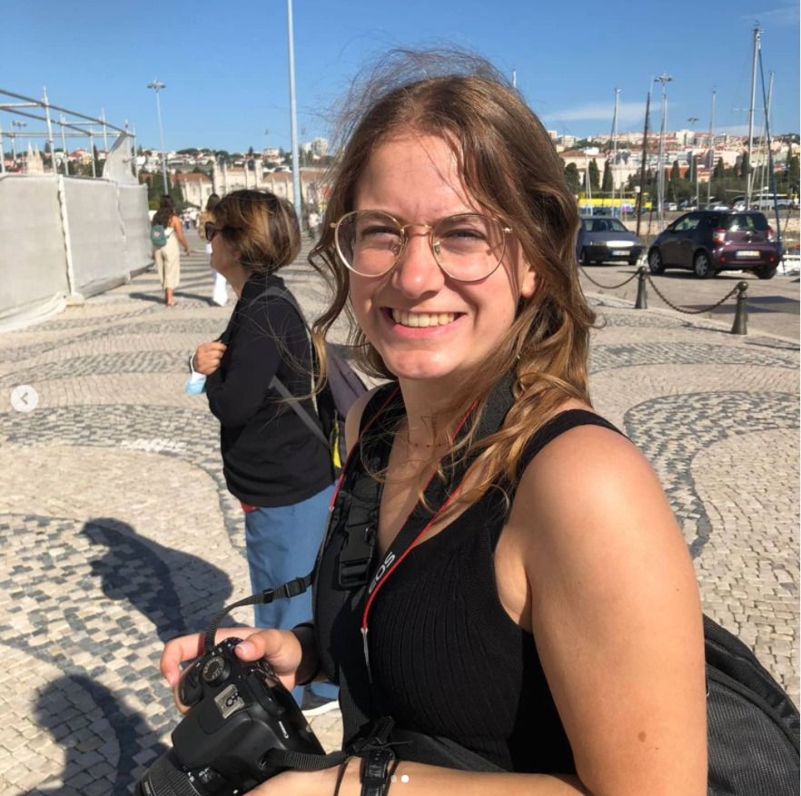
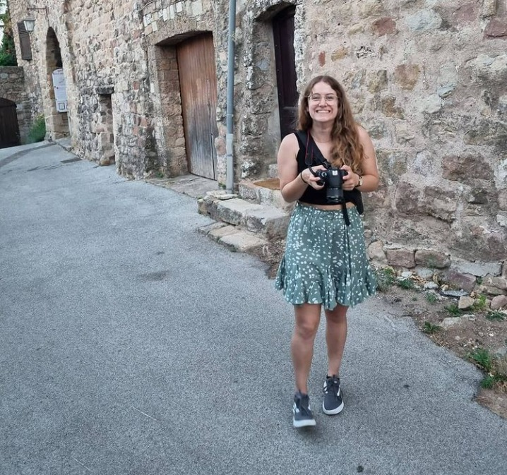

Hey! Voor de mensen die mij nog niet kennen, ik ben Kyara Borger. Ik ben 20 jaar, studeer hbo-ICT aan Zuyd Hogeschool, en in m’n vrije tijd speel ik hockey! Naast hockey spreek ik in m’n vrije tijd natuurlijk ook graag af met vrienden en verdrijf ik mijn tijd graag bij volupia! Zo help ik bijvoorbeeld ook met plezier mee bij verschillende commissies, maar hier dalijk meer over! De afgelopen maanden heb ik me ook ingezet bij de gemeenteraadsverkiezingen in Brunssum. Ik was verkiesbaar bij de Brunssumse VVD. (iets zeggen over de uitslag?, dat is 16 maart.)
Voordat jullie bang worden, op dit moment ligt mijn prioriteit niet bij de gemeenteraad! Ik heb de afgelopen tijd vooral ervaring op gedaan, en deze ervaring kan ik dan meenemen, altijd eigenlijk wel?, maar ook als ik me over 4 jaar echt zou willen toevoegen aan of bij de gemeenteraad.
Dit is eigenlijk wel een korte beschrijving van mij met m’n dagelijkse bezigheden!
^ Dit ben ik tijdens afgelopen 'carnaval' :) , Schinveld 02-2021
Voor de rest:
Vind ik fotografie ook heel leuk! (Wel gewoon alleen hobby he! haha)
 